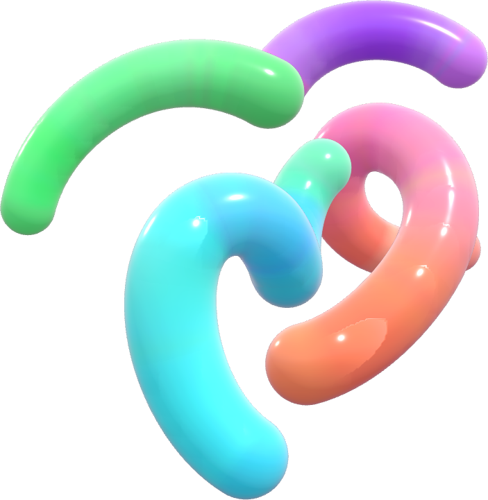

B · Split
Element holds one half at scale; headline, date and venue stack in the other.

National Skills & Career Expo
Show up. Skill up. Stand out.
6–8
NOV
2026
Central Park · Hulhumalé, Maldives
Doors open in
Register Now
Exhibit with us